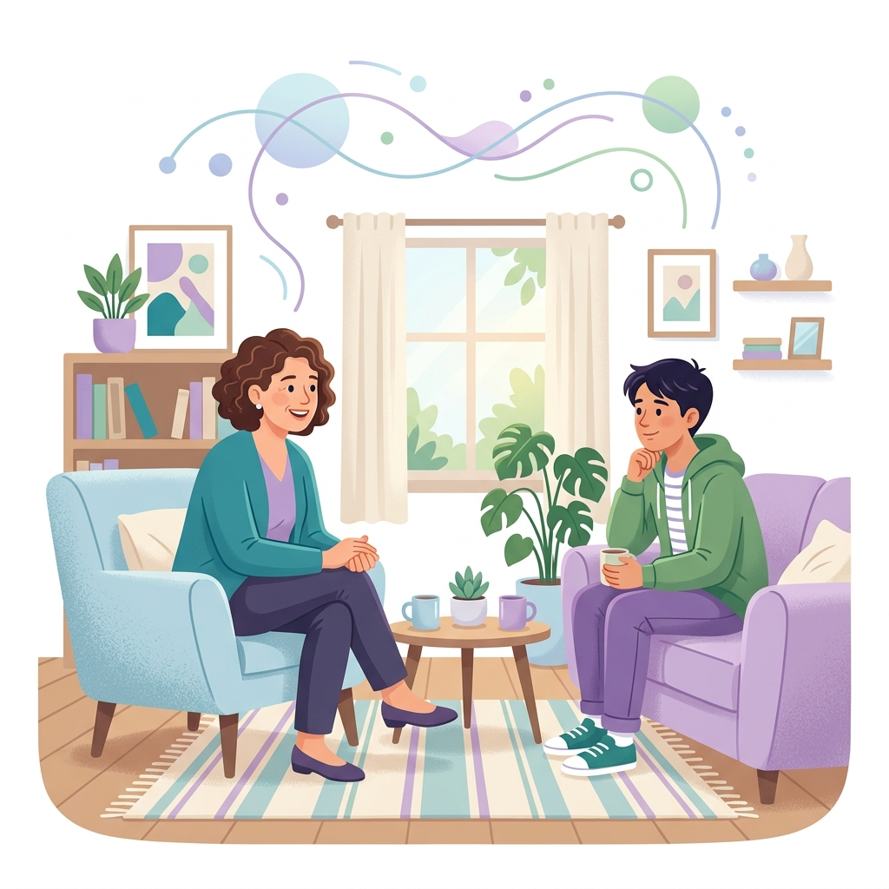

Rebuilding trust and fostering positive outcomes through evidence-based psychological frameworks and daily relational care.
We have embedded the Attachment, Regulation and Competency (ARC) model across our residential care settings.
ARC is an internationally recognised, evidence-based intervention framework designed for children and young people who have experienced complex developmental trauma.

Developed by clinical psychologist Dr. Dan Hughes, PACE is a way of thinking, feeling, communicating, and behaving that helps children feel safe and secure.
Using a light, hopeful tone to defuse tension and build connection.
Unconditionally accepting the child's inner feelings without judgment.
Wondering about the meaning behind behaviours with a calm, interested attitude.
Feeling the child's distress and demonstrating they are not alone in it.
Credibility at Safe Hands is built on rigorous independent inspection, transparent outcomes, and clinical oversight.
Our homes undergo unannounced monthly visits by an independent Regulation 44 visitor, submitting reports directly to Ofsted and local authorities.
Our Registered Manager reviews the quality of care quarterly to draft Regulation 45 reports, analyzing training, incident metrics, and children's developmental progress.
The safety and welfare of children in our care is our absolute top priority. All staff undergo annual safeguarding refreshers, overseen by Shahid.